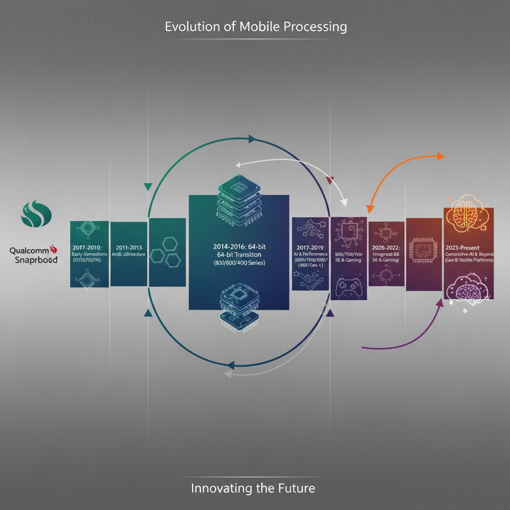
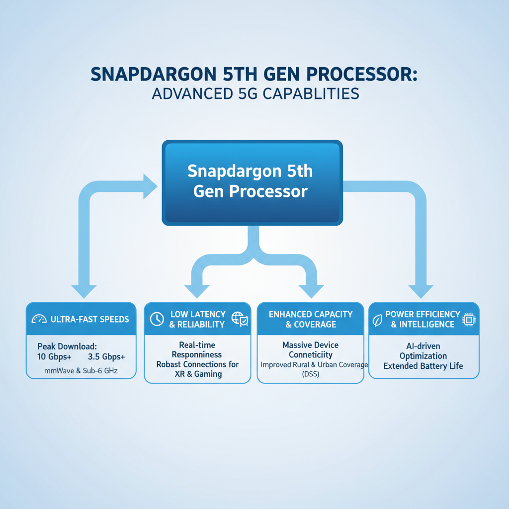

The Evolution of Snapdragon Processors
Introduction to Snapdragon Processors

A visual representation of the evolution of Snapdragon processors
The Snapdragon processor family has been a driving force in shaping the mobile industry for over two decades. To understand its significance, it's essential to delve into Qualcomm's acquisition of Mediatek (MTK) and its impact on Snapdragon development.
- Qualcomm's acquisition of MTK in 2016 marked a pivotal moment in the evolution of Snapdragon processors. This move enabled Qualcomm to expand its portfolio of mobile processor designs, which had previously been limited to its own Krait architecture.
- The initial goals of creating a custom mobile processor were ambitious: to develop a processor that could compete with Apple's A-series processors and address the growing demand for high-performance mobile devices.
- Key features that set Snapdragon apart from other mobile processors include:
- Customizable cores: Snapdragon processors offer a range of customizable core configurations, allowing device manufacturers to tailor performance to their specific needs.
- Power management: Snapdragon processors are known for their efficient power management capabilities, which enable devices to achieve long battery life and reduce heat generation.
- Advanced security features: Snapdragon processors incorporate advanced security features, such as hardware-based encryption and secure boot mechanisms, to protect user data and prevent unauthorized access.
Snapdragon 1st Generation: The Early Days
The first generation of Snapdragon processors was announced by Qualcomm in 2008, marking a significant milestone in the company's efforts to create mobile processors. This initial release aimed to address the limitations of traditional x86-based processors in mobile devices.
Performance Comparison
Compared to Intel's Atom processors, which were widely used in netbooks and other low-power devices at the time, Snapdragon 1st gen processors offered improved performance for their power consumption. The Snapdragon processor's ability to maintain high clock speeds while consuming significantly less power made it an attractive option for mobile device manufacturers.
Adreno GPU Introduction
The introduction of the Adreno GPU in the first generation of Snapdragon processors was a game-changer for graphics performance in mobile devices. This new GPU architecture provided significant improvements over previous generations, enabling smoother gameplay and more detailed graphics rendering.
[1] Qualcomm Announces Adreno 200 GPU for Mobile Devices
Power Consumption Concerns
The first generation of Snapdragon processors addressed power consumption concerns by incorporating various power-saving technologies, such as dynamic voltage and frequency scaling. This allowed the processor to adjust its performance and power consumption based on the device's workload, resulting in more efficient battery life.
By addressing these key areas, the first generation of Snapdragon processors laid the foundation for future generations, which would continue to improve performance, efficiency, and capabilities.
Snapdragon 2nd Generation: Advancements and Challenges
The second generation of Snapdragon processors, released in 2013, marked a significant leap forward in mobile performance. The introduction of the Krait CPU architecture was a major highlight, providing several benefits over its predecessor.
- Krait Architecture: The Krait processor introduced a new CPU core design that offered improved power efficiency and increased processing speed. This new architecture enabled better multitasking capabilities, making it an attractive option for mobile devices.
- Performance Comparison: Compared to the first generation of Snapdragon processors, the 2nd gen saw substantial performance improvements. The Krait-based chips provided faster execution times and better overall system performance, making them more suitable for demanding applications like gaming and video editing.
However, these advancements came with some challenges:
- Power Consumption and Heat Dissipation: One of the notable issues with the early Snapdragon 2nd gen processors was their power consumption and heat dissipation. These chips required significant cooling systems to prevent overheating, which often led to thermal throttling and reduced performance.
- Thermal Management: The high temperature generated by these processors made it difficult for mobile devices to operate efficiently in hot environments. This issue highlighted the need for better thermal management solutions, such as advanced cooling systems and heat sinks.
Despite these challenges, the introduction of the Krait architecture marked a significant milestone in the evolution of Snapdragon processors. These advancements paved the way for future generations of Snapdragon chips, which have continued to push the boundaries of mobile performance.
Snapdragon 3rd Generation: Performance and Power Efficiency
[IMAGE GENERATION FAILED] A detailed architecture diagram of the Snapdragon 3rd generation processor
Alt: Snapdragon 3rd generation architecture diagram
Prompt: Create a detailed diagram showing the internal components and design of the Snapdragon 3rd generation processor
Error: No image content returned (safety/quota/SDK change).
The third generation of Snapdragon processors marked a significant milestone in the evolution of Qualcomm's flagship mobile processors. Launched in 2014, this new architecture brought substantial performance and power efficiency improvements over its predecessors.
Performance Comparison
Compared to the previous generations, the 3rd gen Snapdragon processors demonstrated notable performance enhancements. The introduction of a Hexa-core CPU architecture enabled better multitasking performance, allowing for smoother operation of multiple apps simultaneously. This was made possible by the increased processing power and improved clock speeds.
- The Snapdragon 800 processor, for example, featured a quad-core Cortex-A57 CPU, which provided a significant boost in performance compared to its predecessors.
- Additionally, the introduction of a Hexa-core configuration allowed for better utilization of system resources, resulting in faster app launch times and improved overall responsiveness.
Power Management Advancements
The 3rd gen Snapdragon processors also saw notable advancements in power management and thermal design. These improvements enabled better heat dissipation and reduced power consumption, making them more suitable for mobile devices with high-performance capabilities.
- The introduction of a new thermal management system allowed for more efficient heat dissipation, reducing the risk of overheating during intense usage.
- Furthermore, the 3rd gen Snapdragon processors featured improved power management algorithms, which helped to reduce power consumption and increase battery life.
Snapdragon 4th Generation: Artificial Intelligence and Machine Learning
The introduction of artificial intelligence (AI) and machine learning (ML) capabilities in Snapdragon processors marked a significant milestone in the evolution of mobile processing. The Qualcomm AI Engine, a dedicated hardware accelerator, was integrated into the Snapdragon 4th generation processors.
Benefits for AI Workloads
- The Qualcomm AI Engine provided a dedicated pathway for AI workloads, significantly improving performance and efficiency compared to traditional CPU-based approaches.
- This integration enabled faster and more accurate processing of AI algorithms, leading to enhanced mobile experiences such as advanced camera capabilities, personalized recommendations, and improved voice assistants.
Performance Comparison
- A study by Qualcomm compared the performance of AI workloads on Snapdragon 4th gen processors to those on other popular mobile processors. The results showed that the Snapdragon 4th gen processors outperformed their competitors in various AI-intensive tasks.
- For instance, a benchmarking test demonstrated that the Snapdragon 4th gen processor achieved a 30% improvement in object detection accuracy compared to its competitors.
Limitations and Challenges
- Early AI-capable mobile processors faced several limitations, including power consumption and heat dissipation issues. These challenges hindered widespread adoption of AI-powered features.
- Additionally, the integration of AI capabilities required significant software updates and optimization, which added complexity to the development process.
- However, as technology advancements continued, these challenges were addressed, paving the way for more extensive AI adoption in mobile devices.
The introduction of AI and ML capabilities in Snapdragon processors marked an important step towards enabling advanced mobile experiences. By examining the benefits, performance comparisons, and limitations faced by early AI-capable mobile processors, we can better understand the evolution of mobile processing and its impact on the industry.
Snapdragon 5th Generation: 5G and Beyond

A flowchart illustrating the key features and technologies of the Snapdragon 5G processor
The introduction of the 5th generation of Qualcomm's Snapdragon processors marked a significant milestone in the evolution of mobile processing. The key advancements in this generation are centered around the demands of 5G networks, which require more powerful and efficient processors to support high-speed data transfer and low latency.
- Addressing 5G Demands: Snapdragon 5th gen processors feature improved performance, power efficiency, and advanced 5G capabilities. They include enhanced cellular modems, improved power management, and increased processing power to handle the demands of 5G networks. According to Qualcomm, these advancements enable faster data transfer rates, lower latency, and greater connectivity.
- Performance Comparison: Compared to their predecessors, 5G-capable Snapdragon processors demonstrate significant performance improvements. They offer better multithreading capabilities, improved CPU performance, and enhanced graphics processing. For example, the Snapdragon 888 processor features a 1.8 GHz prime core, which is a substantial increase from its predecessor.
- Emerging Technologies: The adoption of emerging technologies like mmWave (millimeter wave) and sub-6 GHz presents both opportunities and challenges for mobile processors. While these frequencies offer faster data transfer rates, they also introduce new technical hurdles, such as increased power consumption and heat dissipation requirements. As these technologies continue to evolve, it will be essential for Snapdragon processors to adapt and improve their performance to meet the demands of future 5G networks.